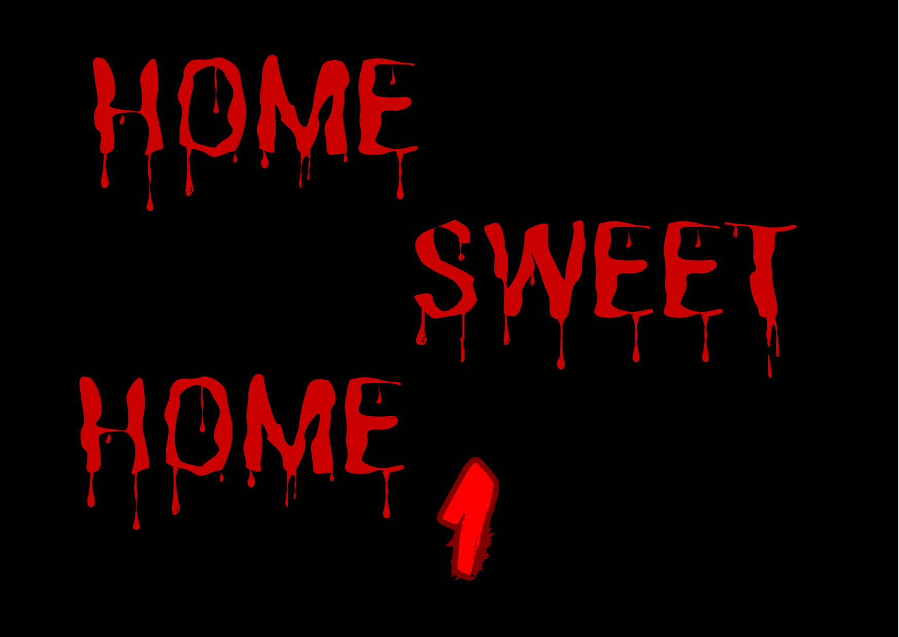

Explore our current and upcoming projects. We focus on horror experiences with deep stories, immersive environments, and psychological tension. Each game is crafted to stay in your mind long after playing.

HOME SWEET HOME 1 is our first major project — a psychological horror game set in a mysterious and abandoned orphanage. Players explore dark corridors, hidden rooms, and floors sealed for decades. The game mixes exploration, survival, and narrative-driven encounters.
The orphanage was once a place of care and hope, but tragedy left a mark. Children started disappearing and strange events unfolded. Floors from -10 to -30 were sealed. Rumors say something sinister still lurks there. The player uncovers the dark history, piece by piece, while trying to survive encounters with children who are no longer human.
The environment itself is alive — lights flicker, whispers echo, and every room hides clues to unravel the mysteries of the orphanage. Players must solve puzzles, explore forbidden floors, and navigate psychological challenges that heighten the horror experience.
The game emphasizes exploration, survival mechanics, and story-driven gameplay. Every floor introduces new challenges, puzzles, and escalating tension. The children-demons are unpredictable, and each encounter requires careful observation and strategy.
Atmospheric sound design, dynamic lighting, and environmental storytelling combine to create a deeply immersive experience. The player’s choices and curiosity affect how much of the story is revealed and how the environment reacts, adding replayability and suspense.
Currently in development, HOME SWEET HOME 1 is being meticulously crafted to deliver a unique psychological horror experience. Fox Games is committed to quality and immersion, ensuring players will feel both tension and awe as they explore the orphanage’s dark secrets.